Core Team
The Maker Team came together in 2014 to develop a stablecoin on the Ethereum blockchain. Since then, we’ve been working with Dapp developers, researchers, and economists to create formally-verified smart contracts that govern the Dai Stablecoin System.
